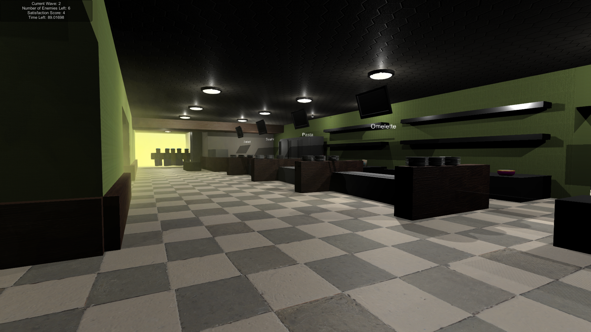
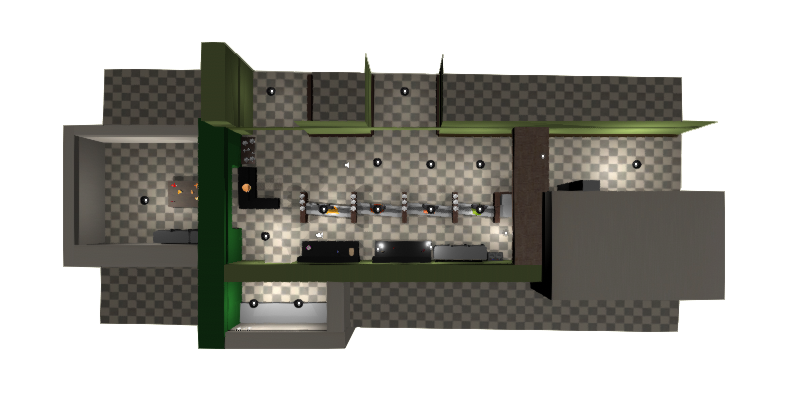
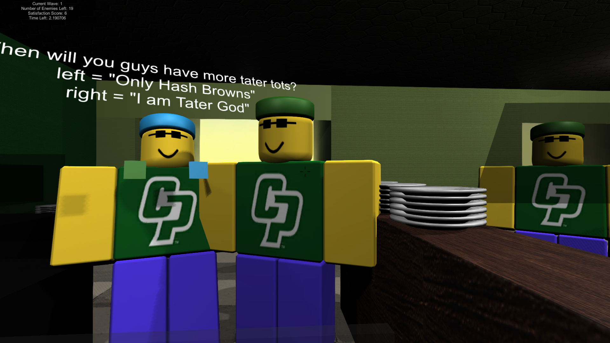
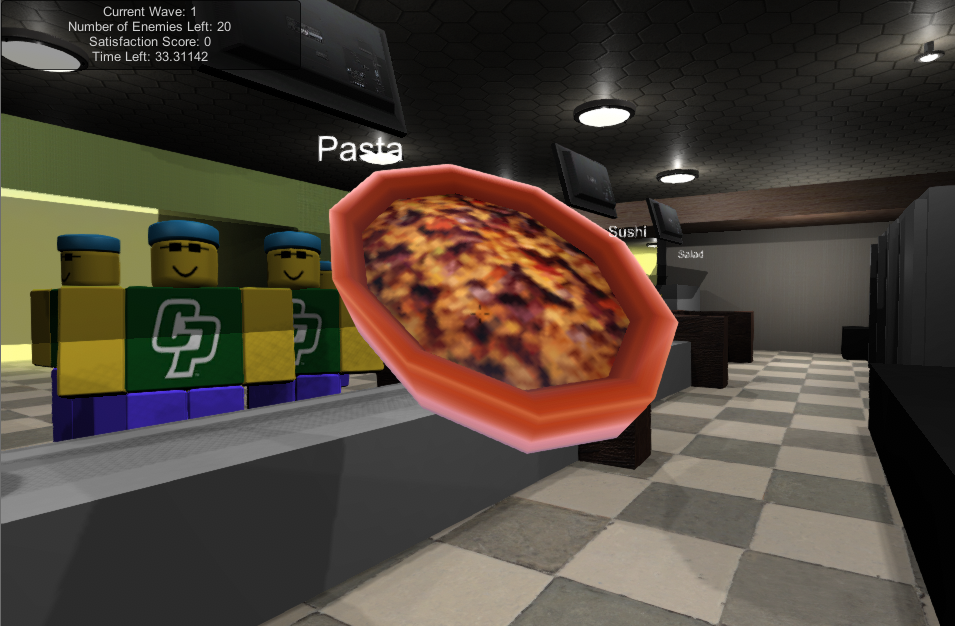
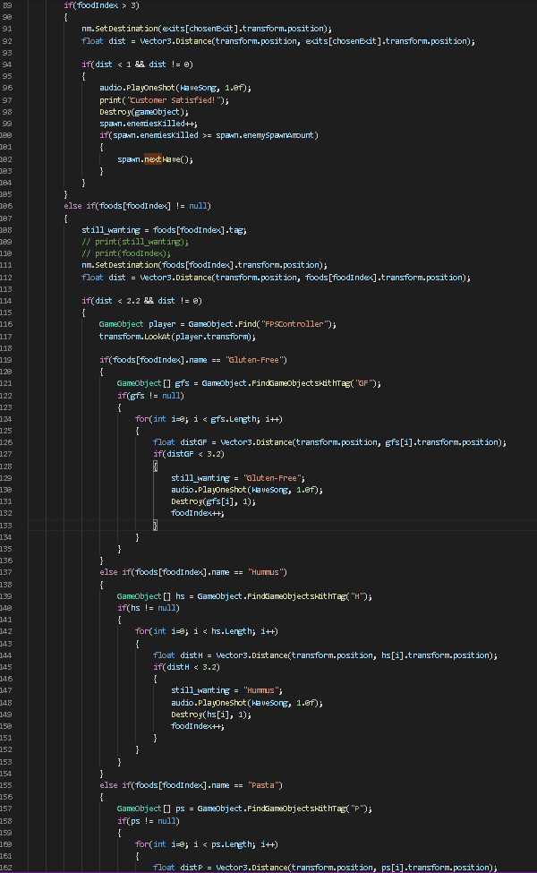
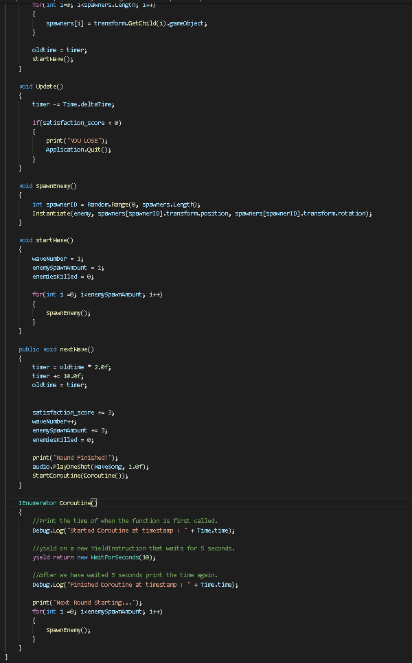

CSC-377
Spring Quarter 2020
The game is based off of Call of Duty's Zombie mode, in which the player has to fend off
waves of zombies. After defeating a wave, the next wave of zombies increases in size; this
trend continuing until the player eventually gets overrun.
In my game, I followed this format except the zombies are now hungry Cal Poly students
and wave completion is based off the player's ability to serve all the customers before
the timer runs out and maintain a positive customer satisfaction score.
If these conditions are not met, the game automatically exits, leaving the player unable to
attempt the next hunger wave.
I found this project idea cool because it would allow future employees to train digitally and
also experience the magic of working at one of Cal Poly's best on-campus eateries. A potential
training method for students unable to perform the primary on-site training due to current
arising dilemmas.

Customer's have a list of specified targets. For example, if the customer currently wants
a hamburger, he/she will go to the hamburger serving table and eat any existing hamburger
on that table. If there is no hamburger present, the customer will wait at the table until
you bring a burger to the burger table.
Customer's also have the chance of asking questions. They will go near the food spawner and
their questions will be displayed above their heads. You answer them by clicking the corresponding
colored boxes that indicate a chosen answer on their torsos.

As a player, you have the simple mechanics of movement, grabbing and dropping food, and spawning food.
In short, there are waves of hungry students that you must feed. They will go to certain food tables and
your job is to refill the food tables with the corresponding item; answering questions from customers as well.
When a customer is satisfied, he/she will leave to through the two exit areas. Once all the customers for that
round have been satisfied before the timer runs out and your satisfaction meter is non-negative, the next wave begins.


Each customer starts off with a target list (randomized list of food and questions). The customer always starts
on the first index of its list. Once the customer has made contact with its target, the customer has become satisfied
and its target index is incremented to move onto the next target in its list. Once the customer's target index is at max length
of the list, the customer is satisfied and leaves.

The wave spawner starts off with 3 enemies and sets up basic statistics for UI to use such as what wave we are on, how many
enemies were spawned for this round, etc. If the player has killed all the enemies, the nextWave function is called.
